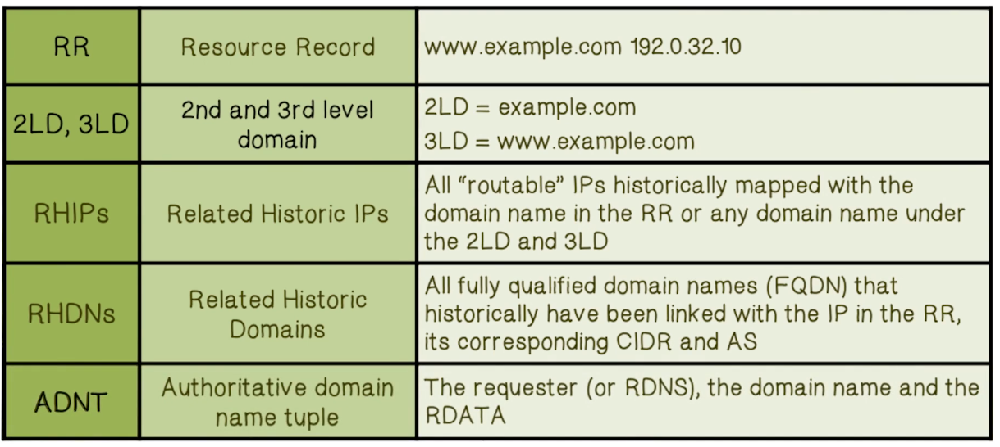
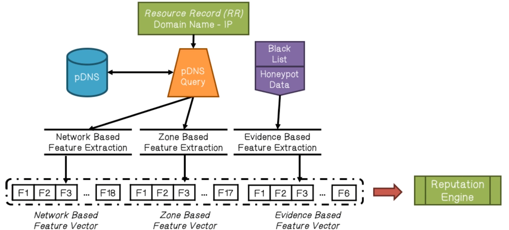
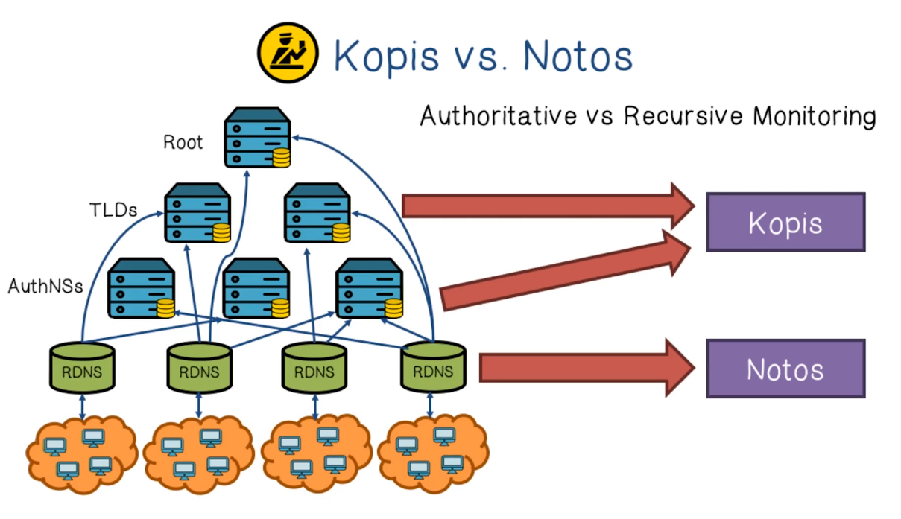
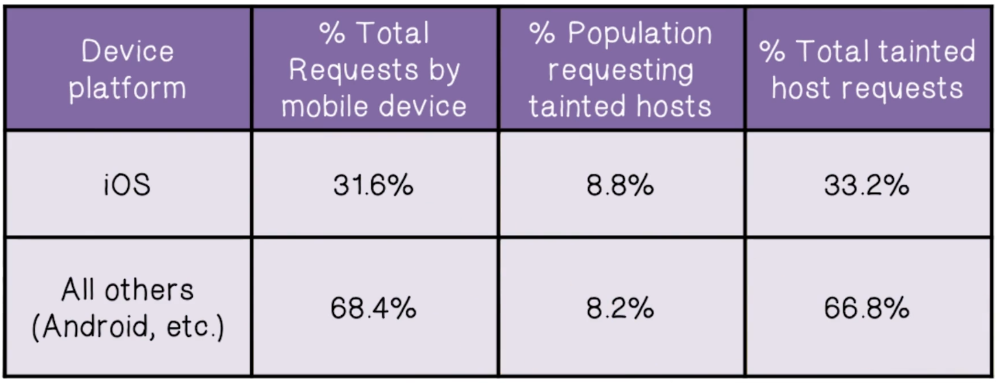
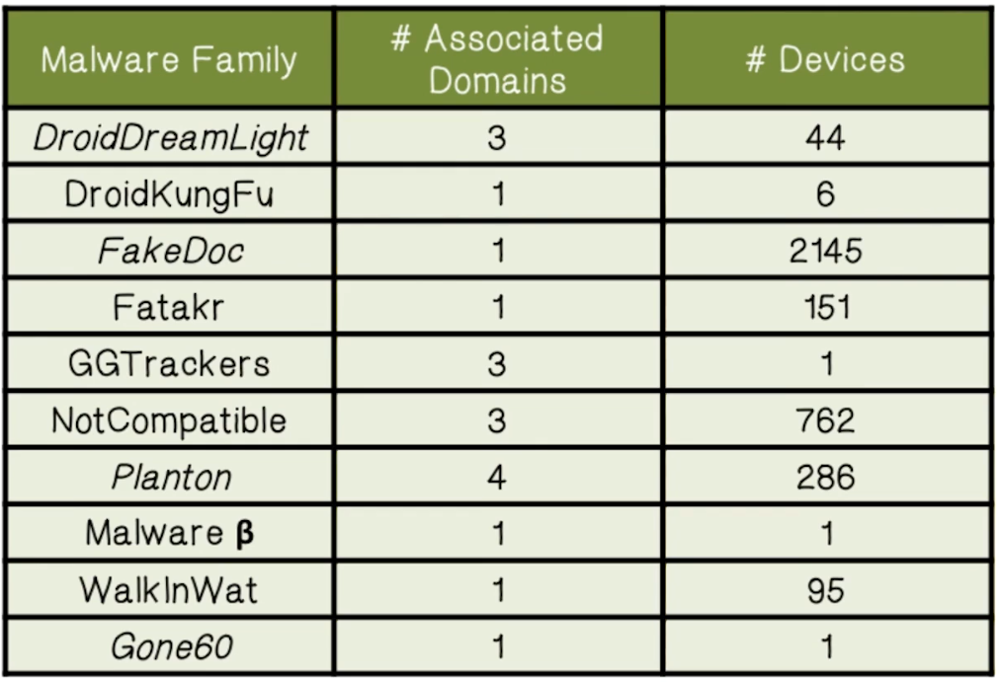
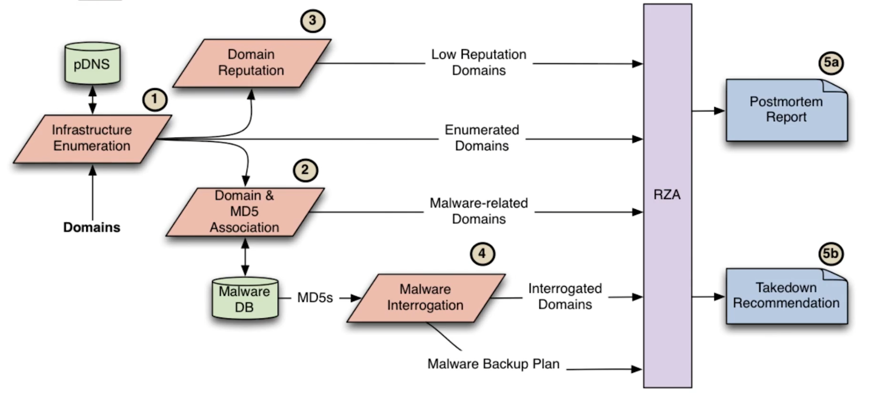
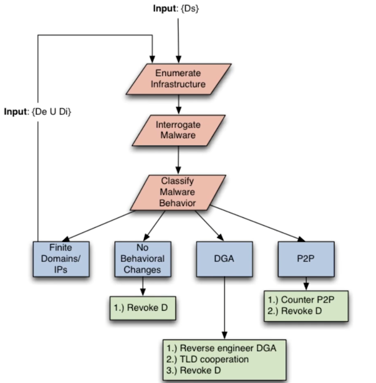

NetSec Lecture Notes - Lesson 16 - Domain and Network Reputation
Domain and Network Reputation
DNSBL Quiz
Match the DNSBL level with its description
- This IP address does not send spam, and should not be blacklisted. But it is not fully trustworthy
- NoBL
- This IP address is not directly involved in spamming but is associated with spam-like behaviors
- Grey
- No trust in this IP address
- Black
- This IP address is known toproduce spam and non-spam email
- Yellow
- Complete trust in this IP address
- White
Motivation for Reputation
- Traditionally, if an IP address was discovered to have sent spam, it was added to a blocklist. This is known as a “static” blocklist
- Problem with that is that new IP address are trusted, and spammers know to get new addresses periodically
- Instead of innocent until proven guilty, the reality of the situation demands a “suspect until proven innocent” model
New Blocklist Model Criteria
- Motivation
- Static DNSBL increasingly ineffective
- Need a dynamic, comprehensive reputation system that outputs reputations scores for domains
- Intuitions
- Legitimate uses of domains/sites are different from malicious uses, and the differences can be observed in DNS query traffic
- Patterns/reputation of Requesters, Resolved IPs, Network providers
- Approach
- Extract temporal and statistical features from DNS traffic, compute/learn models
DNS Quiz
Match the malicious application with its DNS characteristic
- Anonymously registered domains
- Spyware
- Disposable domains
- Adware
- Short lived domains
- Botnets
Malicious Domain Names Quiz
List the types of characters a malicious domain name detection program should look for in a domain name
- Number of characters
- Number of hyphens
- Number of digits
- Number of numbers
Notation and Terminology

- Passive DNS (pDNS) data collection is the harvesting of successful DNS resolutions that can be observed in a given network
- Passive DNS database contains traffic from several ISP sensors and data repositories
- Observed that different classes of zones demonstrate different passive DNS behaviors
- Kopis obtained authoritative DNS traffic from 2 large authoritative DNS servers (AuthNS) and the Canadian TLD
NOTOS
- A system that dynamically assigns reputation scores to domain names
- Network and zone based features capture the characteristics of resource provisioning, usages, and management of DNS domains
- Models of legitimate and malicious domains for computing reputation scores for new domains
- Accuracy - can correctly classify new domains with very low false positive rate (0.3846%) and high true positive rate (96.8%)
- Predictive power - able to detect and assign a low reputation score to fraudulent domain names, several days or even weeks before they appear on static blocklists
Statistical Features of NOTOS

- Network-based features
- Extracted from the set of RHIPs
- e.g. the total number of IPs historically associated with a domain, the diversity of their geographical locations, the number of distinct autonomous systems in which they reside, etc.
- Zone-based features
- Extracted from the set of RHDNs
- e.g. te average length of domain names in RHDNs, the number of distinct TLDs, the occurrence frequency of different characters, etc
- Evidence-based features
- e.g. the number of distinct malware samples that contacted the domain, and the same for any of the resolved IPs, etc
NOTOS Reputation Function
- Given domains known to be legitimate and malicous
- Gather NOTOS features for each domain
- Malicious domain label: 1
- Legitimate domain label: 0
- Learn a function that, given the NOTOS feature vector for a domain, outputs a label (0, or 1)
- Reputation socre is the confidence of the label (or, the probability that the domain is malicious)
DNS Database Quiz
The information extracted from the pDNS database can be grouped into three categories. Match the category to its definition
- The number of distinct malware samples that connected to any of the IPs
- Evidence-based features
- The average length of domain names, the occurrence frequency of different characters, etc
- Zone-based features
- Quantities such as the total number of IPs historically associated with the diversity of their geographical locations, the number of distinct autonomous systems, etc
- Network-based features
Kopis
- Passive monitoring in the upper levels of the DNS hierarchy; Internet-wide visibility
- Analyze streams of DNS queries and responses at AuthDNS or TLD servers, and extracts a set of statistical features and trains a model
- Accuracy - high true positive rate (98.4%) and low false positive rate (0.3%)
- Predictive power - able to identify newly created and previously unclassified malicious domain names weeks before they were listed in any blocklist
- Detected a DDoS botnet rising in networks within China almost one month before it propagated within other countries

Kopis Statistical Features
- Requester Diversity (RDI)
- Characterize if the machines (e.g. RDNS servers) that query a given domain name are localized or are globally distributed (based on BGP prefixes, AS numbers, country codes, etc.)
- Requester Profile (RP)
- Distinguish between requesters located in ISP/small business and home networks
- Assign a higher weight to RDNS servers that serve a large client population because a larger network would have a larger number of infected machines
- Resolved-IPS Reputation (IPR)
- Whether, and to what extent, the IP address space pointed to by a given domain has been historically linked with known malicious activities, or known legitimate services
Dynamic Detection Quiz
A dynamic malware-related domain detection system should:
- Have global visibility into DNS request and response messages
- True
- Not be able to detect malware domains before the infection reaches a local network
- False
- Not require data from other networks
- True
- Be able to detect malware-related domains even if there is no reputation data
- True
Study of Mobile Malware Prevalence
- Motivation
- Much work on mobile malware has been on analysis of (malicious) mobile apps
- But, how prevalent are infections on mobile devices?
- Intuitions
- The malicious mobile web is a part of the malicious web
- Mobile malware uses similar infrastructure (C&C) techniques as non-mobile/Internet malware
- Approach
- Obtain DNS traffic in cellular network and identify domains looked up by mobile apps
- Analyze information related to the Internet hosts pointed to by these domains
Key Data and Findings
- Three months of data from a major US cellular provider and a major US non-cellular ISP
- Known mobile malware samples remain rare in US
- Only 6,858 out of 380,537,128 devices, or 0.002%
- This seems like a dated statistic
- Only 6,858 out of 380,537,128 devices, or 0.002%
- iOS vs Android and other devices
- equally likely to connect to suspicious domains
Methodology
- First identify mobile devices, then attribute each DNS query to a device. Then analyze reputation of RRs associated with DNS query
- Use NOTOS features to analyze the hosting infrastructures of the mobile domains. Just using different features.
- Obtain the host IPs pointed to by the mobile domains. For each IP, extract statistical features of:
- Related historic non-cellular domains
- Related historic mobile domains
- Malware association
- URLs for phishing and drive-by download
- Blacklisting incidents
 
Botnet Takedown Quiz
- One of the more successful methods to taking down a botnet requires investigators to find and target each bot in the net
- False
- A proven method to stop botnets requires isolating the C&C domain from the botnet
- True
- With regards to takedowns, P2P-based networks are much easier than C&C networks
- False
Botnet Takedowns
- Takedowns are ad-hoc, of arguable success, are performed without oversight
- System goal: add rhyme+reason to takedowns
- evaluate previous takedown attempts
- recommend and inform on future takedowns
- High-level idea: push our knowledge of infrastructure towards completeness
- Network-side: passive DNS
- Malware-side: malware backup infrastructure
- Overview of RZA system for assessing botnet takedown:
- 
- RZA interrogates malware by catching domain requests and returning “no such domain” responses, prompting malware to try backup domains if it has them. This populates the list of malware domains for the model
- This may also prompt malware to switch to P2P behavior, if it is able, which is valuable to know about
- In general, if malware is presented with unavailable infrastructure:
- Retries hardcoded IPs/domains
- Tries to reach a finite set of IPs/domains OR
- Tres to reach an increasing number of IPs/domains (DGA/P2P)
- DGA == Domain Generation Algorithm
- Manipulate fundamental protocol packets to convince malware its primary network asset is unavailable
- DNS and TCP
- Easy to add additional protocols
- Ideal takedown flow:
- 
RZA Takedown Study
- Of the 45 active botnets reviewed:
- 2 had DGA-based backup mechanisms
- 1 had P2P -based backup mechanisms
- 42 were susceptible to DNS-only takedown
- Conclusion drawn by researchers is to advocate for a central authority to coordinate and oversee takedowns
- ICANN’s UDRP/URS as example frameworks
- Criteria for takedowns
- More eyes == more successes
- Test with new TLDs (much like with URS)
- ICANN’s UDRP/URS as example frameworks